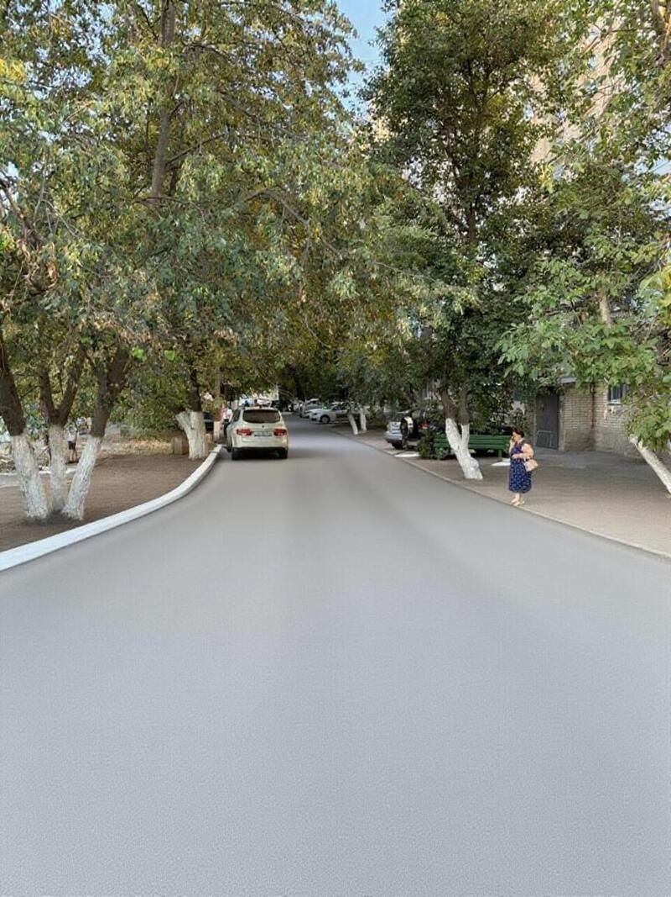
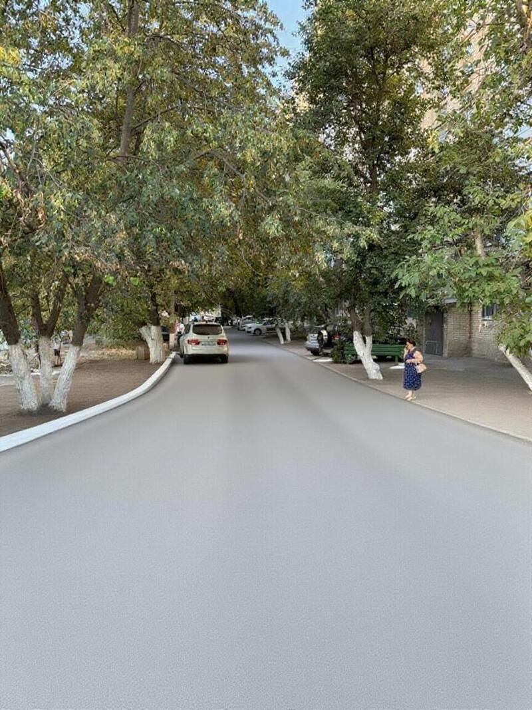

Старт сбора подписей
Сформирована инициативная группа, размещены визуализации и открыта форма обратной связи.
Инициатива жителей в рамках областной программы инициативного бюджетирования
Проект выдвинут инициативной группой жителей; идет сбор подписей и подготовка документов
Участвует в конкурсном отборе программы "Сделаем вместе" на 2025 год
Выразите свое мнение о проекте реконструкции дорог
Посмотрите, как будут выглядеть дороги после реконструкции (при условии победы в конкурсе). Визуализации ориентировочные и могут корректироваться.


 



Актуальные этапы и сроки проекта
Проведение собраний жителей, сбор подписей в поддержку проектов, подача проектных документов в муниципальные образования
до 31 августа 2025Обсуждение и отбор инициативных проектов на уровне муниципального образования
до 1 октября 2025Передача итогового перечня проектов, прошедших муниципальный отбор, на областной уровень
до 17 октября 2025Оценка инициативных проектов на областном уровне, объявление проектов-победителей
до 14 ноября 2025Реализация победивших инициативных проектов (при условии прохождения всех этапов отбора)
2026 годНайдите участки реконструкции на карте
Подробная информация о реконструкции
Проект планируется к реализации в рамках областной программы инициативного бюджетирования "Сделаем вместе" Ростовской области. Ремонт дорог местного значения входит в компетенцию органов местного самоуправления.
Проект выдвинут инициативной группой жителей домов 231-237 по ул. Советская. Собрано более 180 подписей; сбор продолжается.
Общая стоимость проекта: 2.8 млн рублей. При победе в конкурсе: субсидия из областного бюджета 2.66 млн руб. (95%), софинансирование жителей 140 тыс. руб. (5%).
Проект находится на этапе сбора документов и подписей жителей. Документы должны быть поданы в муниципальное образование до 31 августа 2025 года для участия в конкурсном отборе.
Используется современный мелкозернистый асфальтобетон типа Б. Предусмотрена подготовка основания, устройство дренажа и установка бордюрного камня.
Подрядчик будет определен по результатам конкурентных процедур в соответствии с 44‑ФЗ. Информация о подрядчике будет опубликована после проведения закупки.
Правовая основа и возможности инициативного бюджетирования
Проект "Сделаем вместе" - это областная программа инициативного бюджетирования Ростовской области, которая дает возможность жителям самостоятельно выдвигать и отбирать важные для своей территории проекты.
Важно: Финансирование будет предоставлено только при условии победы проекта в конкурсном отборе на муниципальном и областном уровнях.
Коротко о прогрессе и ближайших шагах
Сформирована инициативная группа, размещены визуализации и открыта форма обратной связи.
Пройдёт уточнение смет и согласование перечня работ по участкам 1–12.
Будут проведены встречи с администрацией по условиям участия в программе «Сделаем вместе».
Если не нашли ответ — напишите нам через форму
Свяжитесь с нами по любым вопросам
Мы готовы ответить на все ваши вопросы о ходе реконструкции и программе "Сделаем вместе".